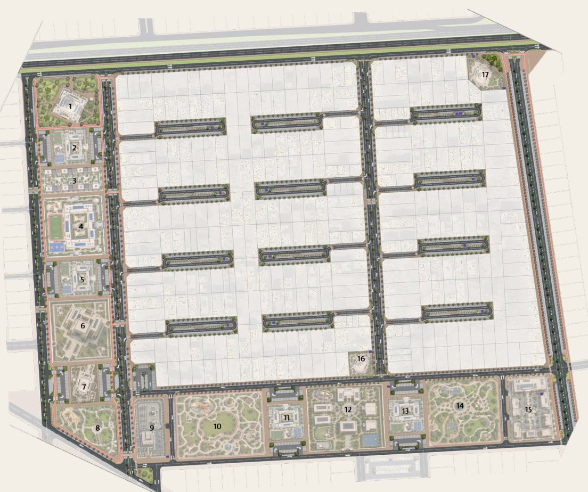
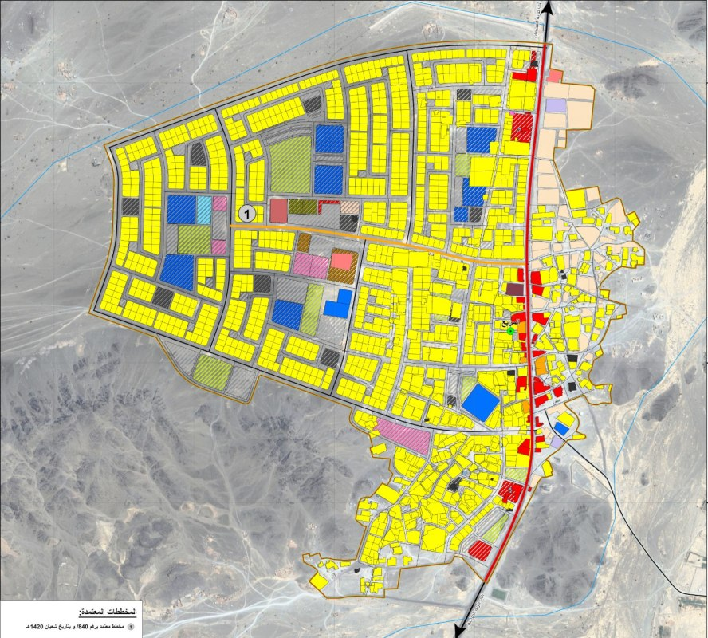
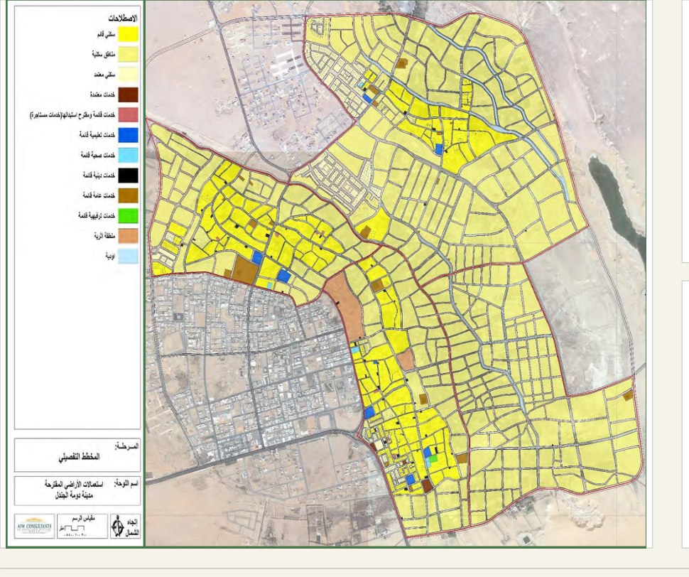
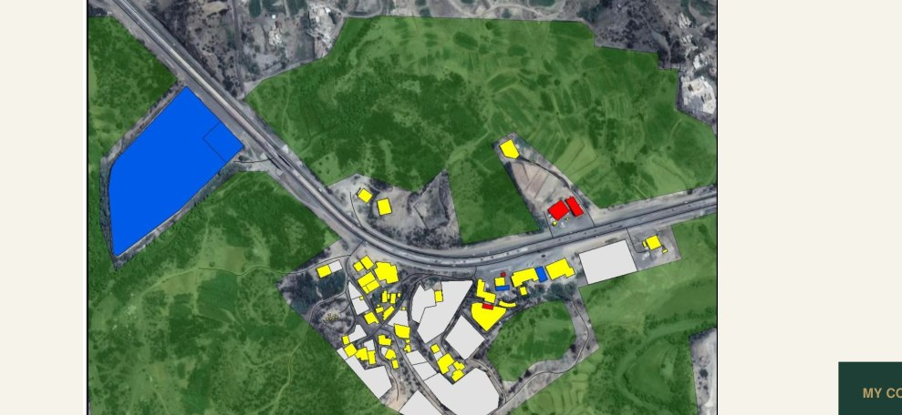
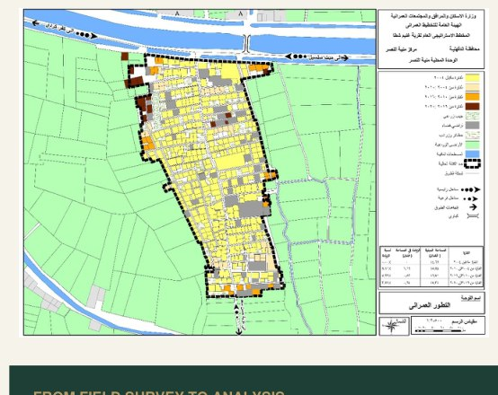
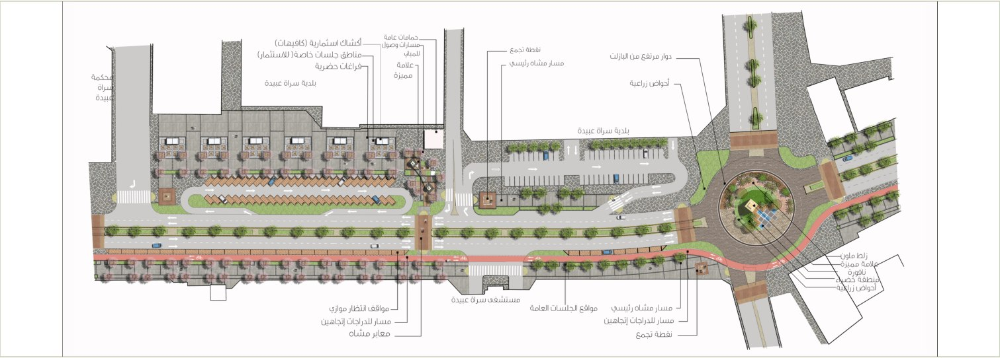
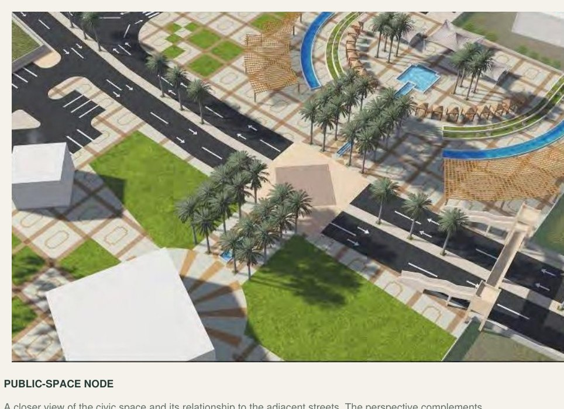
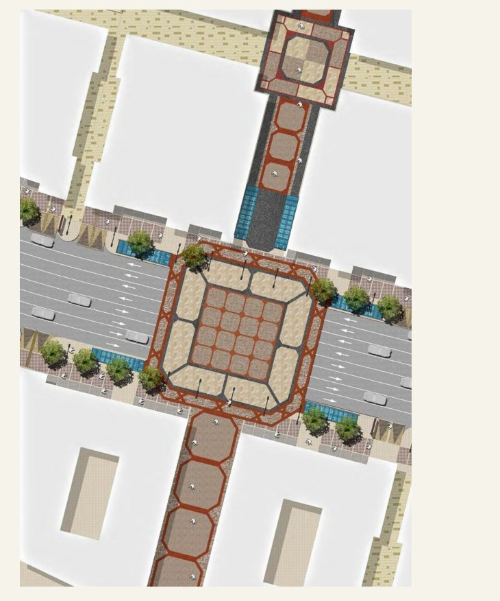
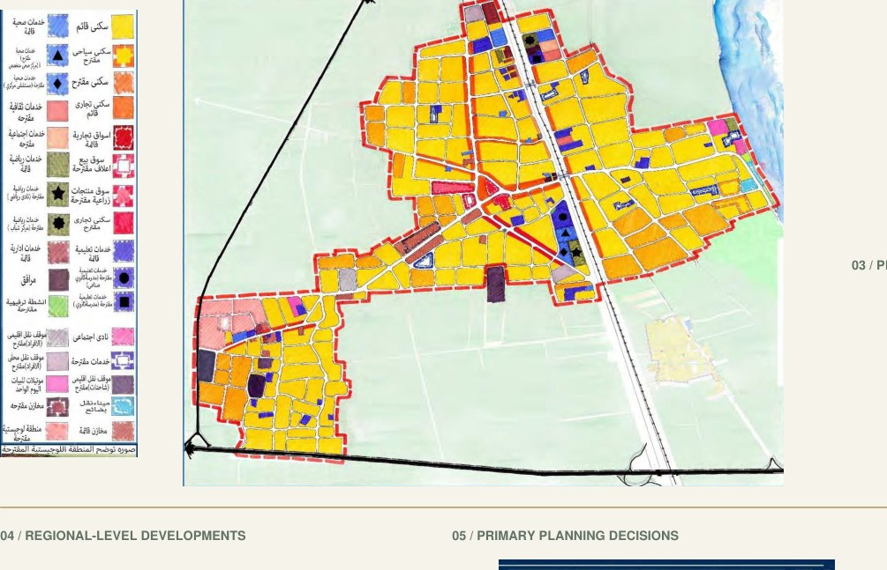
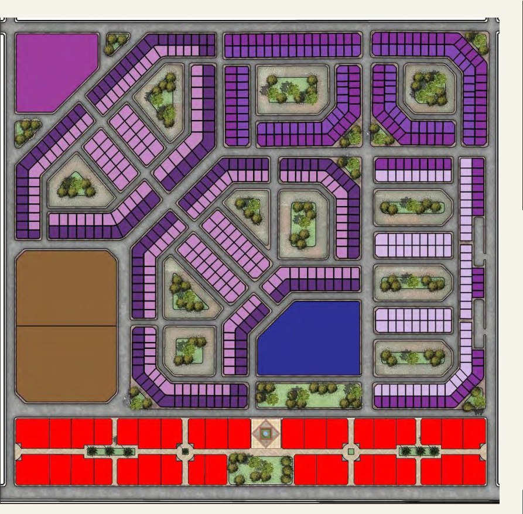

Urban Planner · Urban Designer · GIS
Ahmed Ashraf
Planning places. Connecting spatial insight with urban design.
Urban planner and urban designer with project experience in Saudi Arabia, Egypt, the UAE and Iraq. My work combines detailed planning, village development, GIS analysis and public-realm documentation.
Based in Madinah, Saudi Arabia
Professional profile
Experience behind the work
A brief overview of my experience, responsibilities and education. The full CV includes detailed roles and project experience.
Career progression
- 2023–Present
AFM Engineering Consultants
Urban Planner & GIS Specialist
- 2022–2023
Asses Al Benaa
Urban Planner
- 2021–2022
Center of Planning & Architectural Studies
Deputy Head of Urban Planning Department
- 2019–2021
Julfar Engineering Services
Urban Planner
- 2017–2019
Point Engineering Consultations
Urban Planner
Curriculum Vitae · 2 pages · PDF
Planning & development
Detailed plans, urban boundaries and village development.
GIS & spatial analysis
Geodatabases, spatial mapping and survey review.
Public realm & documentation
Streetscape design, hardscape details and setting-out plans.
Selected work
Projects across scales
Open a project to explore its drawings and my contribution. Request the complete portfolio PDF by email.










The introductory artwork and portfolio cover are AI-generated conceptual illustrations. Project drawings and individual contributions are documented in the portfolio.
Portfolio
Request a portfolio copy
Selected Work Portfolio
The complete PDF is available on request. Email me with your details and the purpose of your request. I will review it and share a copy upon approval.
Contact
Let’s connect.
Ahmed Ashraf Abdelmaksoud · Madinah, Saudi Arabia